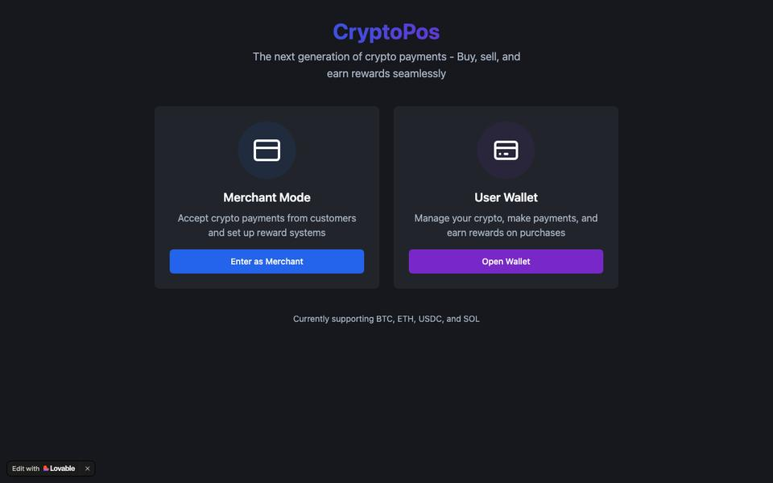

POC 2 · Stablecoin rewards & acceptance
CryptoPos
Merchants and buyers both get paid to move money on the new rail — with the economics visible at the counter, not at month-end.

Open live prototype ↗ Concept prototype — illustrative data
Premise
Merchants today choose between custodial processors that convert instantly — and take a spread — or a bare wallet address with no receipts, refunds, or reporting. CryptoPos is the missing middle.
Why it’s hard
Three costs hide behind the QR code: settlement volatility, refund semantics when price moves, and no dispute rail. None are technology problems; all are priced into “no.”
The insight
Merchants change behaviour when the economics pay for it — the enriched-data play from card rails: value for basis points, made visible.
The decisions that matter
Configured once, visible always.
North star: merchants still accepting weekly at day 90. ★
Signups and gross volume inflate with incentives and say nothing — one whale distorts a month. A merchant transacting a quarter later, unprompted, means the economics and the operations both held.
activationrewards redemption ratesettlement mixrefund incidence & time
What I got wrong · what’s next
What I got wrong
- Led with asset breadth — four assets read as ambition; stablecoin-first is the honest architecture.
- Rewards ignored who pays — card-style 2% without card-style interchange to fund it; the margin floor exists because v1 let a demo merchant lose money per sale.
- Refunds were an afterthought — pinning value at sale decides who eats the price move; I should have recognised a loss-allocation question on sight.
Next: run it as a proper program — small-ticket, high-frequency segment, day-90 north star as the gate. That exercise is its own page.